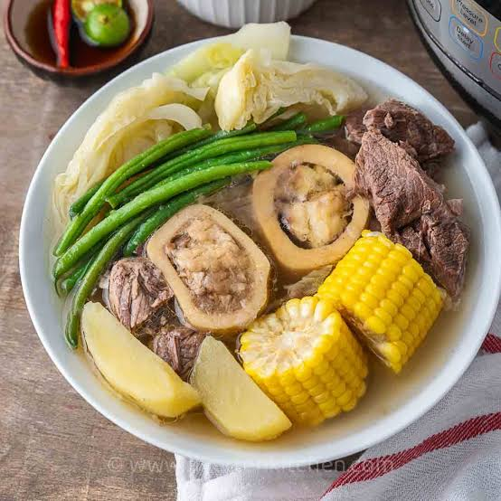

Home
Bulalo

Description
Bulalo is a Filipino beef soup made with beef shanks and bone marrow.
It is slowly cooked with vegetables to create a rich and flavorful broth.
Ingredients
- Beef Marrow Bones
- Beef Shank
- Onion
- Garlic
- Black Peppercorns
- Patis
- Salt
- Corn
- Chayote
- Baby Bok Choy
Steps
- Boil a large pot of water. Add the 2 beef marrow bones and 1 pound beef shank and return to a boil. Continue boiling until you don't see any more red blood coming from the meat or bones (about 10 minutes), then remove the meat and bones with tongs and scrub under cold water to remove any scum. Dump the water in the pot out and rinse the pot. This process rids the meat of excess blood and will ensure your soup is nice and clear.
- Return the cleaned meat and bones to the pot then add the 1 onion, 3 cloves garlic, 1 teaspoon black peppercorns and 2 tablespoons patis. Cover with water then bring it to a rolling boil and skim off any scum that accumulates.
- Reduce the heat to medium low. If you are using a pressure cooker, affix the lid and let it cook for 1 ½ hours. If you're not using a pressure cooker, simmer until the meat on the shank is fork tender (4-5 hours). Skim off any excessive fat from the top but do not remove it all (remember, fat=flavor). Transfer the meat and bones to a bowl, then strain the stock through a fine mesh sieve, discard the solids then return the meat and bones to the strained stock.
- Add the 2 cobs corn and 1 chayote and simmer for another 20 minutes or until the chayote is tender. Add salt to taste, then add the 3 baby bok choy at the last minute. Serve with rice.